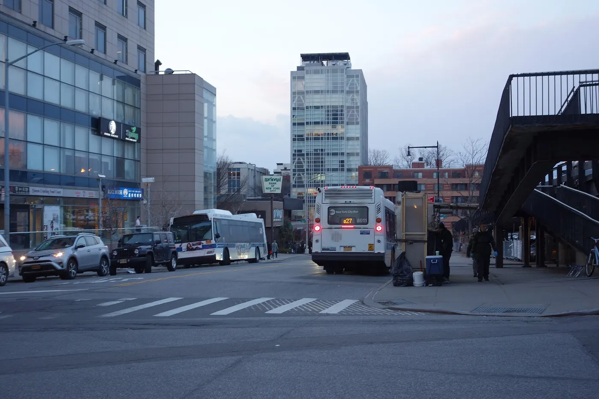

Flushing: the city's biggest Chinatown
Flushing is the largest Chinese community in New York and one of the best places to eat in the city. Come hungry, bring cash for the small spots, and give yourself an afternoon for the food courts, Main Street and Flushing Meadows–Corona Park.
Checked 2 November 2026. Prices, opening hours and transport details were verified against official sources. Things change — confirm before you book. How we check.
A food district with a park attached
Flushing's centre is dense, loud and entirely given over to food: basement food courts, bakeries, dumpling shops and restaurants specialising in regional Chinese cooking. The park at its edge is the calm counterweight.
Start at New World Mall on Main Street, where the basement food court is the single best introduction to the neighbourhood. Order from two or three stalls, share everything, and then walk Main Street for dumplings and bakeries. The 7 train ends here, so you can eat your way back toward Manhattan if you like.
Flushing Meadows–Corona Park is a fifteen-minute walk west: the Unisphere, the Queens Museum and the US Open grounds. It is enormous, free and much emptier than the food streets, which makes it a good way to end an afternoon before the train back.

What to see beyond the food
Flushing is a food district first, but these four make it a proper afternoon.
New World Mall food court
The basement food court is the reason many New Yorkers make the trip out here.
Main Street
Bakeries, dumpling shops and Chinese grocers along the 7 train's last stop.
Flushing Meadows–Corona Park
The Unisphere, the Queens Museum and the US Open grounds, all free to walk.
Queens Museum
The borough museum, home to the Panorama of the City of New York. Check its hours before you go.
Eating in Flushing
This is the best-value eating in the city; most meals are cheap and enormous. Prices are a guide.
| Place | What to order | Price |
|---|---|---|
| New World Mall food court | Regional Chinese from a dozen stalls | budget |
| Main Street dumpling shops | Dumplings and scallion pancakes | budget |
| Chinese bakeries | Egg tarts and milk tea | budget |
| Neighbourhood restaurants | Sichuan, Cantonese or northern Chinese | moderate |
An afternoon in Flushing
Food first, then the park; the 7 train makes the return easy.
-
11:00 — Main Street bakeries
Start with egg tarts and milk tea, then walk north toward the food courts.
-
12:00 — New World Mall food court
Order from two or three stalls, share everything and take your time.
-
14:00 — Flushing Meadows–Corona Park
Walk west to the Unisphere and the open lawns; the park is enormous and free.
-
15:30 — Queens Museum
See the Panorama of the City of New York, then walk back toward the train.
-
17:00 — A last plate on Main Street
Dumplings or a bakery stop before the 7 train back to Manhattan.
Getting there and getting it right
The 7 train runs to Flushing–Main Street, about 35–40 minutes from Times Square and the simplest route. The LIRR from Penn Station is faster but less frequent. Once you arrive, the food streets are within a few blocks of the station, and the park is a 15-minute walk west.
Weekend lunchtimes are the busiest, when families fill the restaurants and the food court queues grow. A weekday lunch is calmer and just as good. Mornings are quietest, and the park is pleasant in the late afternoon.
Nearby and worth your time
Flushing is the eastern end of the 7 line, with the rest of Queens along the way.

Flushing questions
Is Flushing worth the trip from Manhattan?
Yes, if you care about food. The 7 train takes about 35–40 minutes from Times Square, and the reward is the best Chinese food in the city and a vast park at the end of the line.
What should I eat in Flushing?
Start in the New World Mall food court, then walk Main Street for dumplings, bakeries and Chinese groceries. Regional cooking — Sichuan, Cantonese, northern Chinese — is the point, so order beyond the familiar dishes.
How do I get to Flushing?
The 7 train runs to Flushing–Main Street, about 35–40 minutes from Times Square. The LIRR from Penn Station is faster but runs less often.
Is Flushing Meadows–Corona Park free?
Yes. The park is free to walk, and the Unisphere and the US Open grounds are outdoors. The Queens Museum charges admission; check its current hours and price before you go.